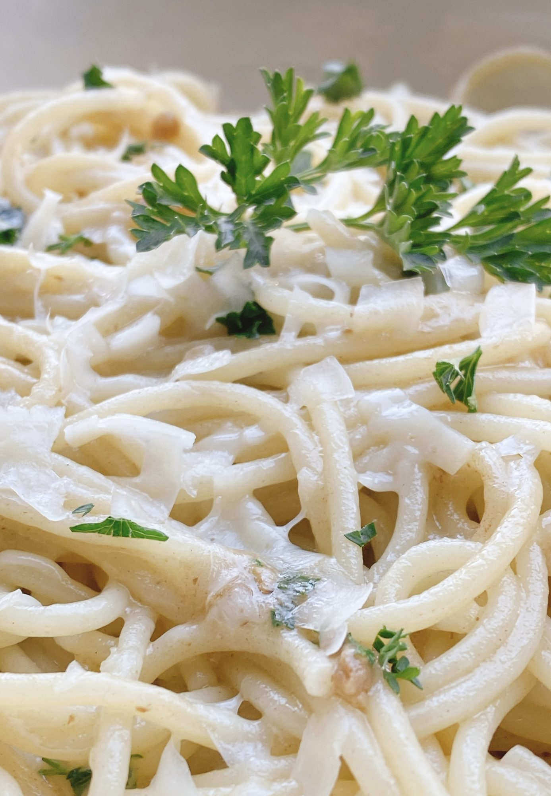

Garlic Parmesan Spaghetti

Description
This is a fast-to-fix pasta side dish, or change out the pasta shape and it can be transformed into a pasta salad by adding black olives, pepperoni, cubed cheese, etc.
Ingredients
- 6 ounces spaghetti
- 1 tablespoon butter
- 2 cloves garlic, minced
- ½ cup reserved pasta water
- ½ cup lightly packed freshly shredded Parmesan cheese
- 1 tablespoon finely chopped fresh parsley
Steps
- Bring a large pot of lightly salted water to a boil. Cook spaghetti in the boiling water, stirring occasionally, 8 to 10 minutes.
- Meanwhile, melt butter in a skillet over medium-high heat. Add garlic and cook until fragrant, about 1 minute.
- Drain spaghetti, reserving 1/2 cup pasta water. Add pasta water and Parmesan cheese to the skillet with the garlic. Stir to combine. Add spaghetti and parsley. Toss to evenly distribute parsley amongst spaghetti and serve immediately.
Back to Menu